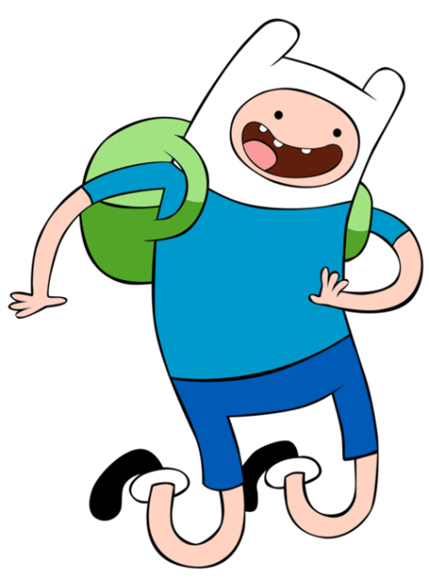

Benvenuti
Questo è il mio primo sito web.

Questa è una intestazione più piccola.
Un sito web è fatto di tante parti, le più importanti sono:
-
La struttura della pagina, che si crea usando i tag HTML
-
Lo stile degli elementi, che si applica usando i fogli di stile CSS
-
La possibilità di interagire con gli elementi, che si realizza utilizzando il linguaggio Javascript